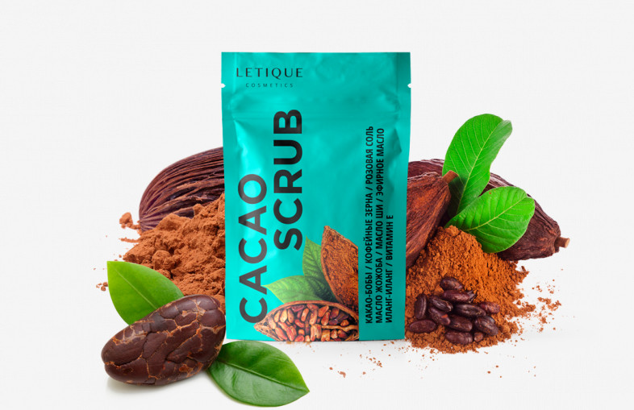

КАКАО СКРАБ
Описание
В состав скраба входят какао-бобы, кофейные зерна, розовая соль, масло жожоба, масло ши, эфирное масло иланг-иланг и витамин Е.
Скраб интенсивно способствует удалению шероховатостей кожи, улучшают её текстуру и стимулируют кровообращение. Какао-бобы и кофейные зёрна увеличивают тонус и упругость кожи, а смесь масел и витамин Е восстанавливают её эластичность и запускают процессы регенерации.
250 г
6000 тг
Эффекты
Какао скраб обладает омолаживающим и расслабляющим эффектом благодаря наличию в составе какао масла. В сочетании с эфирными маслами скраб обладает прекрасными ароматическими свойствами. Благодаря мягким абразивным частичкам кожа становится гладкой и нежной как у младенца.
Кофеин в составе скраба улучшает кровообращение в проблемных зонах, что ускоряет обмен веществ. А это одно из главных условий в процессе омоложения кожи и расщепления жира. Поэтому скраб из кофе применяется как антицеллюлитное средство. Кроме того кофеин в скрабе способствует выводу лишней влаги из клеток и тем самым оказывает тонизирующее и разглаживающее действие на кожу.
Применение
Нанесите скраб на увлажненное тело, желательно после ванны или душа, когда кожа слегка распарена. Помассируйте зону нанесения круговыми движениями, уделяя особое внимание проблемным местам. После этого смойте остатки скраба теплой водой и промокните кожу полотенцем.
Состав
Cacao Granules, Sea Salt, Glycerin, Prunus Amygdalus Dulcis (Sweet Almond) Oil, Coffea (Coffee) Seed Powder, Simmondsia Chinensis (Jojoba) Seed Oil, Vitis Vinifera (Grape) Seed Oil, Butyrospermum Parkii (Shea) Butter, Theobroma Cacao Seed Butter, Fragrance, Tocopheryl Acetate, Chlorphenesin, Cinnamomum Cassia Essential Oil, Ylang-Ylang Essential Oil, Melaleuca Alternifolia (Tea Tree) Essential Oil.